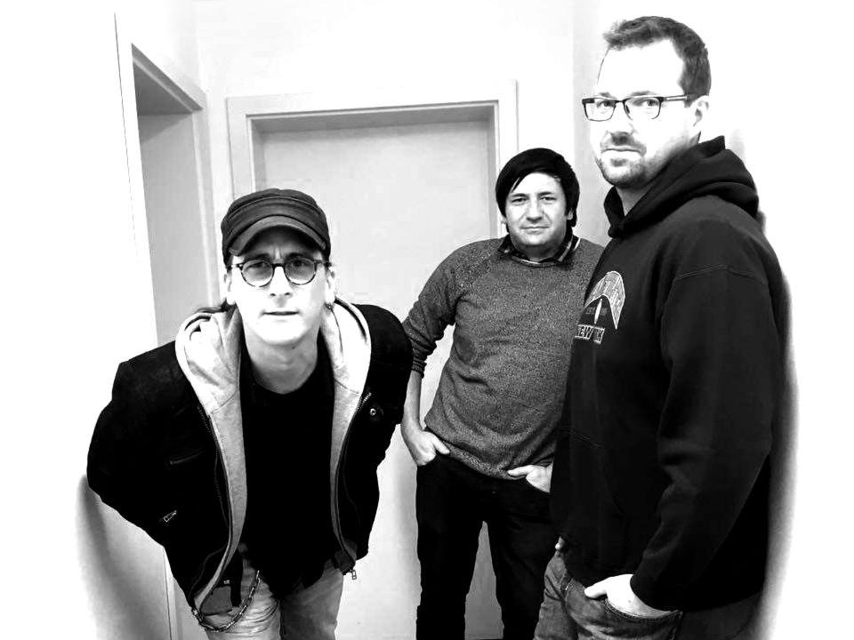
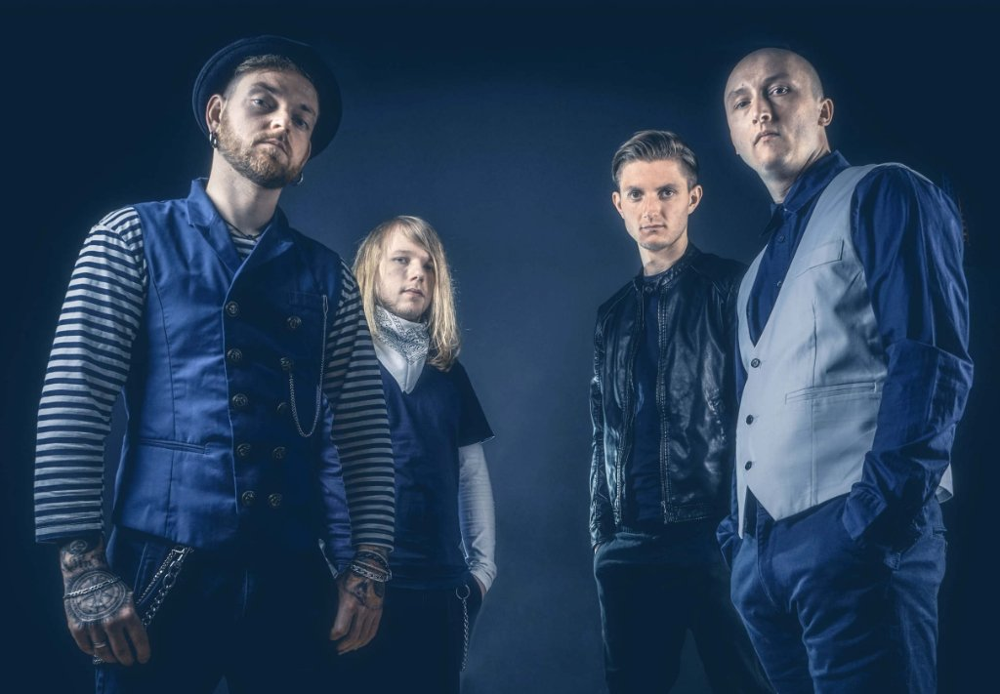

Ska/Reggae/Rock aus Trier
Seit 2000 begeistert diese achtköpfige Liveband mit iherer eigenständigen, abwechslungsreichen und vor allem tanzbaren Musik sowohl neue Hörer als ach eingefleischte Fans und vereint sie alle vor der Bühne auf der Tanzfläche. Neben eigenständigen Gigs und Festivals spielten Spy Kowlik bereits als Support vor internationalen Ska-Acts wie den Toasters (USA), Burman Flash (Spanien) oder Karamelo Santo (Argentinien). Aber sie teilten die Bühne auch mit vielen Bands anderer Musikrichtungen, wie z. B. den Fantastischen Vier, den Sportfreunden Stiller, Patrice, den Banana Fishbones, Steakknife, den Emil Bulls oder den Les Babacools. Die Band veröffentlichte bereits vier Alben und mehere Beiträge auf Samplern.
Wer tanzbare und selbstgemachte Lifemusik auf hohem Niveau möchte, kommt an ihnen nicht vorbei!
Alternative Rock aus Rostock
Der Norden rockt - und erweist uns die Ehre! Dias stechen heraus durch vielfältige Songs, einprägsame Melodien, Texte mit denen man sich identifizieren kann, verpackt in einer melancholischen Stimmung. Die Band wurde bereits 2007 unter dem Namen "Depresside" gegründet und spielt seit 2014 in der aktuellen Besetzung als "Dias".
Indie/Pop aus Frankfurt
Ein Schmelztigel für Einflüsse aus verschiedensten Genres, aber dennoch spielerisch wie aus einem Guss. Superuse macht sich seine eigene Mischung aus Pop, Brit-Pop, Rock, Elektro, Stoner und Indie und besingt kleine Gefühle und große Dramen.
Mal kräftig ohne Härte, mal soft ohne kitschig zu sein, meist ordentlich tanzbar und vor allem ohne Berührungsängste gegenüber eingängigen und schönen Melodien und Hooklines.
HardRock/Metal aus Saarbrücken
Hart aber herzlich: Treibende Grooves und Melodien, die sich im Ohr festbeißen. Die Metaller zeichnen sich vor allem durch kraftvollen Gesang, klangvolle Harmonien und kontrastreichen Growl aus. Energiegeladenes Riffing mit Ohrwurmfaktor und ein treibender Rhythmus vervollständigen das Gesamtpaket.
Punkrock aus Limburg a. d. Lahn
Musikalisch inspiriert von den späten 90ern, in denen man nichts außer Skateboarding und Konsole zocken im Sinn hatte, kann man eine über 10 Jahre in gleichbleibender Besetzung gewachsene Band auf der Bühne sehen, die vor Energie und Tatendrang nur so strotzt.
Das im Juni 2017 veröffentlichte Album „Under the Same Sky“ ist der bis heute wichtigste Meilenstein der Bandgeschichte. Driven live - unbedingt erleben!
Rock/HardRock/Rock&Roll aus Kaiserslautern
Rau und kantig - dennoch anspruchsvoll und ausgefeilt, im Kern aber stets dem kompromisslosen Rock verplichtet.
The Rough Edges stehen seit 2012 auf der Bühne, spielen seither regionale und überregionale Gigs in Pubs, Clubs und Festivals. Ihre aktuelle EP "Back to life" erschien 2017.
Hard Rock aus Südwestdeutschland
Donnernde Choppers und freie High Ways - das ist der Spirit guten Hard Rocks nach alter Schule.
Black Moon sind fünf erfahrene Musiker der südwestdeutschen Rockszene, die über viele Jahre in bekannten Bands spielten. Von Spielfreude geprägt, feiern sie mit dem Publikum "Classic-Rock-Partys".
Deutschpunkrock aus Eulenbis
Für euch aus der Region auf die Open Air Stage erweisen sie uns dieses Jahr wieder die Ehre. Auf ihrer letzten Deutschlandtour reisten sie unter anderem durch Clubs in Köln, Berlin, Dresden.
Die fünfköpfige deutschpunkrockband spielt keine zarten Töne an, bei Herzlos könnt ihr im Moshpit schwitzen. Mitsingen und Pogen sind Pflicht!
Vorab könnt ihr schon einmal in ein paar Lieder aus dem aktuellen Album "Schwarz-Weiß-Neon" reinhören.
Singer/Songwriter aus Kaiserslautern
Mel Chella ist eine Singer/Songwriterin aus dem Raum Kaiserslautern. Mit ihrem ersten Song "Flügel" feierte sie erste Erfolge, gewann 2017 den HOFA Songcheck im Bereich Pop. Mit ihrer starken Stimme verzaubert sie das Publikum auf authentische und energievolle Art und steckt dabei mit purer Lebensfreude an.
Progressive-Rock aus dem Saarland
Die drei Musiker sind die vielleicht einzige moderne Progressive Rock Gruppe mit deutschsprachigem Gesang. Sie verbinden Elemente aus verschiedenen Genres wie Stoner Rock, Metal und Grunge. Zusammen mit einer gesunden Portion Prog erschaffen Fibel ihren ganz eigenen, einzigartigen Sound.
Fibel wurde Anfang 2014 von den drei Bandmitgliedern Thomas, André und Daniel gegründet. Nach fast vierjähriger Schaffenszeit wurde dann am 11. November 2017 ihr Erstlingswerk „Sturm & Strömung“ veröffentlicht. Das Album ist als kostenloser Download erhältlich. Jetzt freuen sich Fibel darauf, ihre Musik live zu spielen.
Deutschrock/Metal aus Sachsen
Seit 2017 rockt diese Truppe die Bühnen der Nation. Aus einem Soloprojekt hervorgegangen startet Anthony Scott nun in kompletter Metal-Formation voll durch.
Von Anfang an stand die Windrichtung genau fest: Anthony Scott steht für Deutschrock mit Metalkante, für Texte mit unheimlich viel Herz und für ehrliche Musik mitten aus dem Leben. Symbolisch für den ständigen Drang nach Freiheit und Unabhängigkeit steht das Seemannsgewand.
Indie-Rock/Pop/Punk aus Limburg a. d. Lahn
Diese Rock-WG steht für eingängige Singalong-Refrains und durchweg tanzbare Rhythmen. Neben Gute-Laune-Songs kann 4ZKB aber auch durchaus nachdenkliche Töne anschlagen.
Ihre erste Platte "Eigentlich müsste man mal" kam letztes Jahr raus und wird gerne in diversen Club- und Pub-Feten auf die Livebühne gebracht. Feierbare Musik mit Herz und Hirn - definitv Open-Air-tauglich!